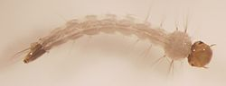
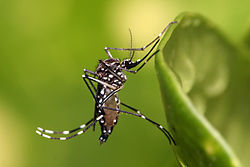

Aedes aegypti |
|||
|---|---|---|---|
| El mosquito del dengue o mosquito de la fiebre amarilla (Aedes aegypti) es un mosquito que puede ser portador del virus del dengue y de la fiebre amarilla, así como de otras enfermedades, como la chikunguña, la fiebre de Zika y el Virus Mayaro . Es miembro del subgénero Stegomyia dentro del género Aedes (al que pertenece el estrechamente emparentado Aedes albopictus, vector también del dengue). Puede reconocerse por sus distintivas marcas blancas, aunque sus diferencias en aspecto con respecto a otros mosquitos pueden ser ligeras. Son más activas durante el día que en la noche a diferencia de otros mosquitos que sólo son activos en la noche o a cualquier hora. Originario de África1 y hoy hallado en regiones tropicales y subtropicales a través del mundo.2 En América, se presenta desde los estados del sur de EE. UU. hasta el centro de la Argentina y el Uruguay. Comparte hábitat con Aedes albopictus, que lo está desplazando en algunas zonas. En 2005 estudios moleculares llevaron a reclasificar Stegomyia como género, cambiando algunos autores el nombre del mosquito por Stegomyia aegypti al igual que se hizo con el Aedes albopictus que pasó a ser denominado homólogamente Stegomyia albopicta; sin embargo, estos estudios han sido muy discutidos, de forma que actualmente el nombre usado de forma mayoritaria es el de Aedes aegypti, como exigen a partir de diciembre de 2005 los editores de las revistas científicas más importantes del sector. El científico cubano Carlos Juan Finlay descubrió que este mosquito era el agente trasmisor de la Fiebre Amarilla y presentó sus resultados por primera vez en la Conferencia Internacional de Sanidad, celebrada en Washington DC, el 18 de febrero de 1881. |  |  | |
En el año 2007 un grupo internacional de científicos completó la secuencia del genoma del mosquito: el genoma de esta especie de mosquito fue secuenciada por un consorcio incluyendo a científicos del J Craig Venter Institute y de la Universidad de Notre Dame. El esfuerzo por secuenciar su ADN es un intento de dar nuevos trayectos de investigación en insecticidas y posibles modificaciones genéticas para prevenir la expansión del virus. Es la segunda especie de mosquito en poseer su genoma secuenciado completamente (el primero fue Anopheles gambiae). Los datos publicados incluyen 1380 millones de pares de base conteniendo una ción de 15 419 genes codificadores de proteínas. Su secuenciación indica que la especie diverge de Drosophila melanogaster (la mosca común de la fruta) desde hace cerca de 250 millones de años, y de Anopheles gambiae desde hace 150 millones de años.
La actividad del Aedes aegypti disminuye por debajo de los 17 °C, pero se requieren temperaturas constantes por debajo de los 12 °C para que dicha actividad desaparezca.
|
|||
| Modificación genética Individuos de esta especie han sido modificados genéticamente con el fin de limitar su reproducción, para reducir así el riesgo de la enfermedad. Los mosquitos así tratados son conocidos como OX513 y fueron desarrollados por una dependencia de la Universidad de Oxford (Inglaterra, Reino Unido). Las pruebas de campo llevadas a cabo en las Islas Caimán, en Brasil y en Panamá han demostrado que en las localidades donde se han introducido los mosquitos genéticamente modificados se han reducido las poblaciones de mosquitos en más de 90%. Esta modificación genética consiste en la introducción de un gen limitante que impide que sobreviva la descendencia. Se liberan machos modificados, que no pican ni diseminan la enfermedad, para que se apareen con las hembras transmisoras. La descendencia de estos apareamientos hereda el gen modificado y muere antes de que pueda reproducirse. Para poder reproducir los mosquitos modificados se inhibe el gen limitante utilizando un antídoto (el antibiótico tetraciclina) en la instalación donde se producen los mosquitos, permitiendo así la reproducción natural. Como en las condiciones de campo este antídoto no se encuentra disponible, la población salvaje de mosquitos se reduce drásticamente. En 2016 la Administración de Alimentos y Medicamentos de Estados Unidos concedió aprobación preliminar para el uso de mosquitos genéticamente modificados para evitar la dispersión del virus del Zika. Este enfoque también pudo aplicarse para controlar al Aedes albopictus y a los mosquitos del género Anopheles que trasmiten la malaria. Otro método propuesto de control consiste en usar radiación para esterilizar las larvas de los machos de modo que cuando se apareen, no produzcan descendencia. | |||
|
Fase de Desarrollo
Se diferencian 4 fases de desarrollo. Ellas son: Fase 1–Huevo: la hembra coloca alrededor de 400 huevos en el agua, que pueden estar solos o agrupados. Fase 2–Larva: los huevos que anteriormente fueron depositados por la hembra se convierten en larvas y se desarrollan en un proceso que tarda alrededor de 5 a 10 días. Son cuatro los estadios larvarios. Fase 3–Pupa: esta fase es la que se antepone a la transformación en mosquito en donde la larva se transforma en pupa y se mantiene así por unos 3 días. En esta fase la pupa no se alimenta y respira a través de espiráculos con forma de trompetas, ubicados en el cefalotorax. Fase 4–Mosquito: en esta fase la pupa se abre y deja salir el mosquito totalmente desarrollado en su estado adulto, tarda alrededor de 3 días en salir dependiendo de las condiciones de temperatura. Puede vivir de 1 a 2 meses y la hembra es la única que se alimenta de sangre (hematófaga). |